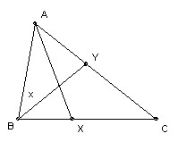
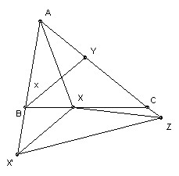

ABC is a triangle. X lies on BC and AX bisects angle A. Y lies on CA and BY bisects angle B. Angle A is 60o. AB + BX = AY + YB. Find all possible values for angle B.
Answer
Answer: 80o.
Solution

This is an inelegant solution, but I did get it fast! Without loss of generality we can take length AB = 1. Take angle ABY = x. Note that we can now solve the two triangles AXB and AYB. In particular, using the sine rule, BX = sin 30o/sin(150o-2x), AY = sin x/sin(120o-x), YB = sin 60o/sin(120o-x). So we have an equation for x.
Using the usual formula for sin(a + b) etc, and writing s = sin x, c = cos x, we get: 2√3 s2c - 4sc - 2√3 c3 + 2√3 c2 + 6sc - 2s - √3 = 0 or -√3 (4c3 - 2c2 - 2c + 1) = 2s(2c2 -3c + 1). This has a common factor 2c - 1. So c = 1/2 or -√3 (2c2 - 1) = 2s(c - 1) (*).
c = 1/2 means x = 60o or angle B = 120o. But in that case the sides opposite A and B are parallel and the triangle is degenerate (a case we assume is disallowed). So squaring (*) and using s2 = 1 - c2, we get: 16c4 - 8c3 - 12c2 + 8c - 1 = 0. This has another factor 2c - 1. Dividing that out we get: 8c3 - 6c + 1 = 0. But we remember that 4c3 - 3c = cos 3x, so we conclude that cos 3x = -1/2. That gives x = 40o, 80o, 160o, 200o, 280o, 320o. But we require that x < 60o to avoid degeneracy. Hence the angle B = 2x = 80o.
I subsequently found this geometric solution on the official Wolfram site (Wolfram was one of the sponsors of IMO 2001). I cannot say it is much easier, but at least it is geometric.

Extend AB to X' with BX' = BX. Extend AY to Z with YZ = YB. Then AZ = AY + YZ = AY + YB = AB + BX = AB + BX' = AX'. Angle A = 60o, so AZX' is equilateral.
Use B also to denote the angle at B. Then angle YBX = B/2. Also angle BXX' + angle BX'X = B. The triangle is isosceles by construction, so angle BX'X = B/2. Hence angle XX'Z = 60o - B/2. X lies on the bisector of A and AZ = AX', so XZ = XX'. Hence XZX' = 60o - B/2 also. But angle Z = 60o, so angle YZX = B/2 = angle YBX.
Now YZ = YB, so angle YZB = angle YBZ. Hence angle XZB = angle XBX (they are the difference of pairs of equal angles). If X does not lie on BZ, then we can conclude that XB = XZ.
In that case, since XZ = XX', we have XB = XX'. But already XB = BX' (by construction), so BXX' is equilateral and hence B/2 = 60o. But then angle B + angle A = 180o, so the triangle ABC is degenerate (with C at infinity), which we assume is disallowed. Hence X must lie on BZ, which means Z = C and angle B = 2 angle C. Hence angle B = 80, angle C = 40.

© John Scholes
jscholes@kalva.demon.co.uk
13 Aug 2001
Last corrected/updated 18 Oct 2002